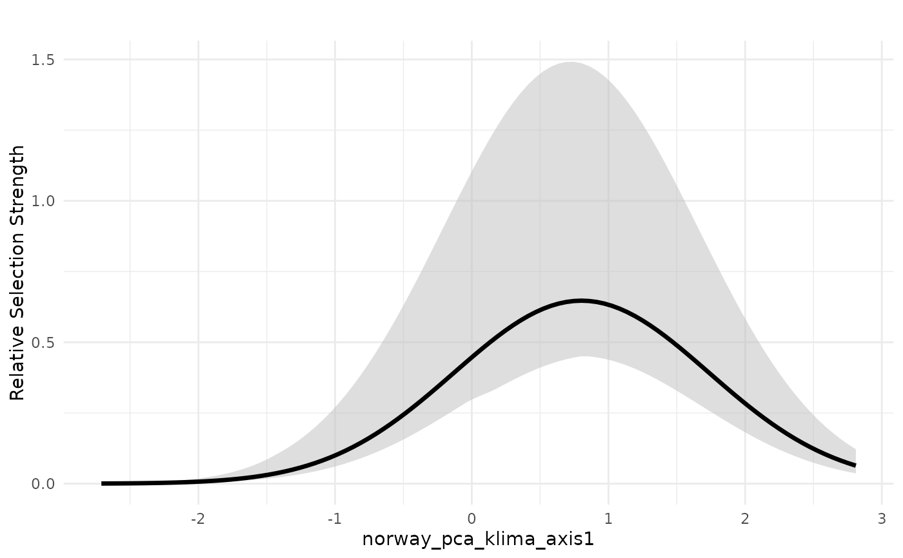
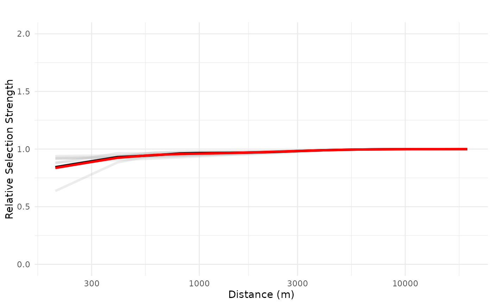
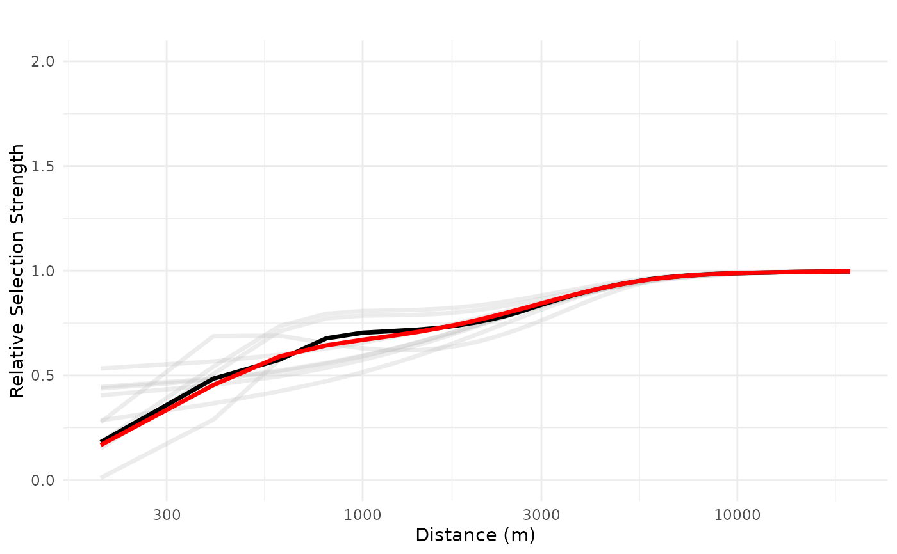
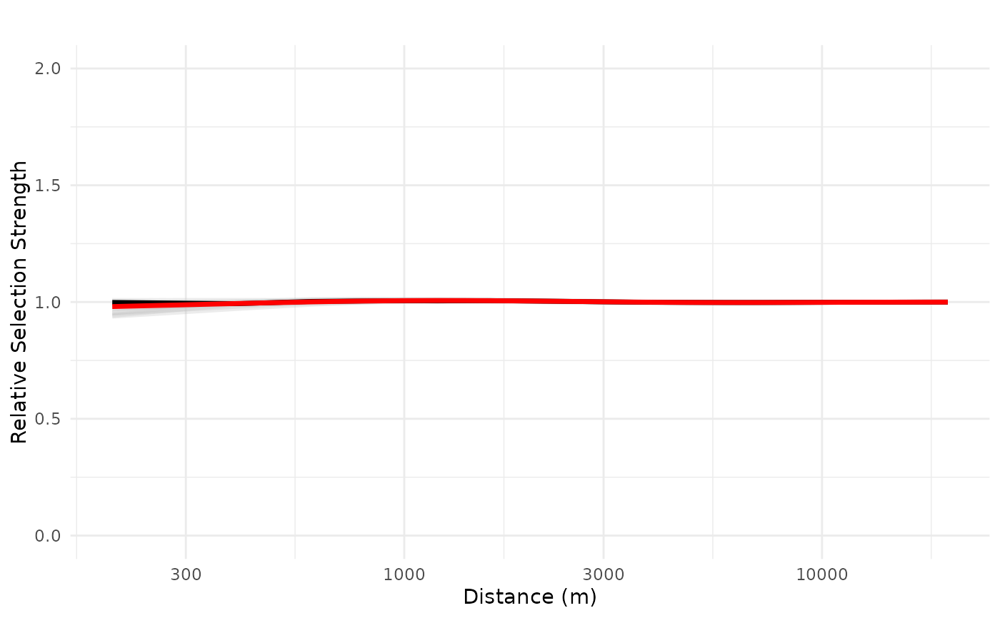
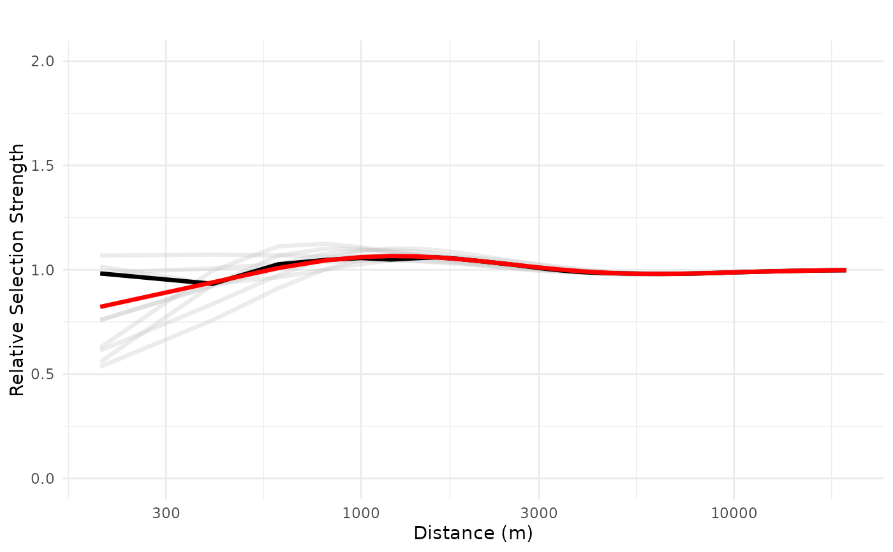

This function takes a bag of models (x) and a set of new data (dfvar) with variation for one or more
specific predictor variables to predict and plot the predictions from the bag. One can either plot only the
mean or (weighted) median response for specific preditor variables, and possibly also the
confidence interval, computed from the weighted quantiles of the prediction. All other variables
are kept constant, as defined by the baseline parameter.
Usage
plot_response(
x,
dfvar,
data,
type = c("linear", "exponential", "logit", "cloglog")[1],
zoi_shape = c("exp_decay", "gaussian_decay", "linear_decay", "threshold_decay")[1],
which_cumulative = "cumulative",
ci = TRUE,
indiv_pred = FALSE,
wq_probs = c(0.025, 0.5, 0.975),
baseline = c("median", "mean", "zero")[1],
zoi = FALSE,
zoi_vals = c(100, 250, 500, 1000, 2500, 5000, 10000),
type_feature = c("point", "line", "area")[1],
type_feature_recompute = FALSE,
zoi_limit = 0.05,
resolution = 100,
line_value = 1,
ggplot = T,
plot_mean = TRUE,
plot_median = TRUE,
n_features = 1,
normalize = c(FALSE, "mean", "median", "ci")[1],
logx = FALSE,
ylim = NULL,
y_lab = "Relative Selection Strength",
col_ci = "grey",
col_indiv = "grey",
col_mean = "black",
col_median = "red",
linewidth_indiv = 1.2,
linewidth_mean = 1.2,
linewidth_median = 1.2,
alpha_ci = 0.5,
alpha_indiv = 0.3
)Arguments
- x
[bag,list]
A bag of models, resulting from a call tobag_models().- dfvar
[data.frame]
Adata.framewith the values of the variables one wants to vary and predict for. All other variables are set to their mean or median, or to zero (this is set by the parameterbaseline). The column names of thedata.framemight correspond exactly to the model covariates or to parts of that (for instance, "roads_paved_" to refer to all ZOI variables related to paved roads).- data
[data.frame]
The original, complete data used for model fitting. Used only for taking the categories of the categorical variables. Irrelevant if there is no categorical variables.- type
[character(1)="linear"]{"linear", "exponential", "logit", "cloglog"}
Type of response. Might be"linear"(default),"exponential","logit", and"cloglog".- zoi_shape
[character(1)="linear"]{"exp_decay", "gaussian_decay", "linear_decay", "threshold_decay"}
Shape of the ZOI. Necessary to be specified to represent correctly the estimated ZOI of the preditor variables.- ci
Should variation or confidence intervals be plotted?
- wq_probs
[vector,numeric(3)=c(0.025, 0.5, 0.975)]
A three element vector with lower, mid, and higher weighted quantiles to be computed.
Examples
#---
# fit a bag to be tested
# load packages
library(glmnet)
#> Loading required package: Matrix
#> Loaded glmnet 4.1-9
#>
#> Attaching package: ‘glmnet’
#> The following objects are masked from ‘package:oneimpact’:
#>
#> Cindex, coxnet.deviance
library(ggplot2)
# load data
data("reindeer_rsf")
# rename it just for convenience
dat <- reindeer_rsf
# formula initial structure
f <- use ~ private_cabins_XXX + public_cabins_high_XXX +
trails_XXX +
NORUTreclass +
# poly(norway_pca_klima_axis1, 2, raw = TRUE) +
# poly(norway_pca_klima_axis2, 2, raw = TRUE) +
norway_pca_klima_axis1 + norway_pca_klima_axis1_sq +
norway_pca_klima_axis2 + norway_pca_klima_axis2_sq +
norway_pca_klima_axis3 + norway_pca_klima_axis4
# add ZOI terms to the formula
zois <- c(100, 250, 500, 1000, 2500, 5000, 10000, 20000)
f <- add_zoi_formula(f, zoi_radius = zois, pattern = "XXX",
type = c("cumulative_exp_decay"),
separator = "", predictor_table = TRUE)$formula
# sampling - random sampling
set.seed(1234)
samples <- create_resamples(y = dat$use,
p = c(0.2, 0.2, 0.2),
times = 10,
colH0 = NULL)
#> [1] "Starting random sampling..."
# fit multiple models
fittedl <- bag_fit_net_logit(f,
data = dat,
samples = samples,
standardize = "internal", # glmnet does the standardization of covariates
metric = "AUC",
method = "AdaptiveLasso",
parallel = "mclapply",
mc.cores = 2)
# bag models in a single object
bag_object <- bag_models(fittedl, dat, score_threshold = 0.7)
#---
# plot predictions for non-ZOI variables
# plot for PCA1
dfvar <- data.frame(norway_pca_klima_axis1 = seq(min(bag_object$data_summary$norway_pca_klima_axis1),
max(bag_object$data_summary$norway_pca_klima_axis1),
length.out = 100))
dfvar$norway_pca_klima_axis1_sq = dfvar$norway_pca_klima_axis1**2
# plot mean response in linear scale with weighted interquartile range
plot_response(bag_object,
dfvar = dfvar,
data = dat,
wq_probs = c(0.25, 0.5, 0.75),
plot_median = FALSE) # remove median, plot only weighted mean
# plot median response in exponential scale with weighted interquartile range
plot_response(bag_object,
dfvar = dfvar,
data = dat,
type = "exp",
wq_probs = c(0.25, 0.5, 0.75),
plot_mean = FALSE) # remove mean, plot only weighted median

#---
# plot predictions for ZOI variables
# plot for private cabins
# define newdata based only on the distances from the source (public cabins)
dfvar = data.frame(private_cabins = 1e3*seq(0.2, 20, length.out = 100))
# plot mean response in exponential scale, with individual lines, x in log scale
# in exponential scale, relative selection strength = 1 corresponse to no effect
# prediction for for 1 cabin only
plot_response(bag_object,
dfvar = dfvar,
data = dat,
type = "exp",
zoi = TRUE,
ci = FALSE,
indiv_pred = TRUE,
logx = TRUE,
ylim = ylim(0, 2))

# prediction for for 10 cabins located at the origin
plot_response(bag_object,
dfvar = dfvar,
data = dat,
type = "exp",
zoi = TRUE,
n_features = 10,
ci = FALSE,
indiv_pred = TRUE,
logx = TRUE,
ylim = ylim(0, 2))

#---
# plot predictions for linear ZOI variables
# plot for tourist trails
# define newdata based only on the distances from the source (public cabins)
dfvar = data.frame(trails = 1e3*seq(0.2, 20, length.out = 100))
# plot mean response in exponential scale, with individual lines, x in log scale
# in exponential scale, relative selection strength = 1 corresponse to no effect
# prediction for for 1 cabin only
plot_response(bag_object,
dfvar = dfvar,
data = dat,
type = "exp",
zoi = TRUE,
ci = FALSE,
indiv_pred = TRUE,
logx = TRUE,
ylim = ylim(0, 2))

# prediction for for 10 cabins located at the origin
plot_response(bag_object,
dfvar = dfvar,
data = dat,
type = "exp",
zoi = TRUE,
n_features = 10,
ci = FALSE,
indiv_pred = TRUE,
logx = TRUE,
ylim = ylim(0, 2))
